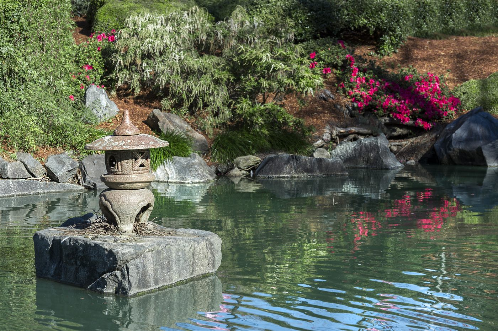
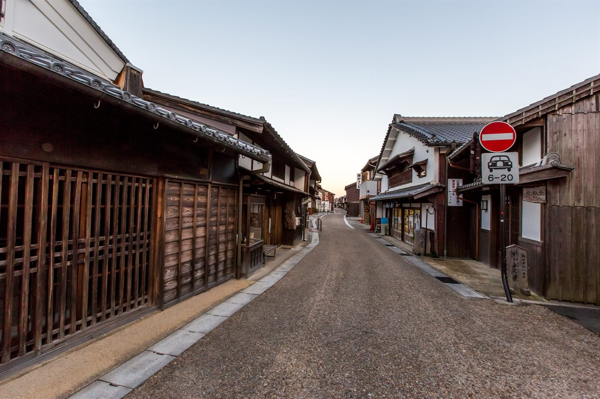
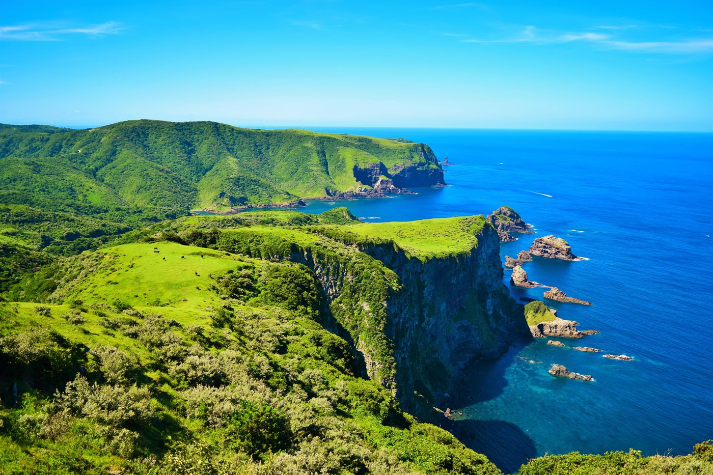

Izumo Mythology
Izumo Taisha and Inasa-no-hama introduce Shinto belief, origin stories, and the cultural idea of connection.
Mythology · Gardens · Art islands
An 11-day trip connecting ancient Japan, regional culture, garden aesthetics, contemporary art, architecture, and the Setouchi island experience.
11 days · Best in spring or fall · Mythology, gardens, and art islands
Dates, pace, activities, accommodation level, learning goals, and supervision can be adjusted for schools, families, clubs, and private groups.
Overview
This is one of the most distinctive trips in the collection. It connects ancient belief and regional culture in Izumo, Matsue, and Iwami Ginzan with contemporary art, architecture, and island regeneration in Naoshima and Teshima.
This journey is strongest for art and design students, architects, collectors, museum-focused travelers, and custom groups looking beyond the standard Japan circuit.
Highlights
Izumo Taisha and Inasa-no-hama introduce Shinto belief, origin stories, and the cultural idea of connection.
Matsue Castle, tea culture, Lake Shinji, the Adachi Museum, and Japanese garden interpretation give the trip a refined tone.
This mining heritage site adds World Heritage depth, with stories of trade, resources, and regional history.
Chichu Art Museum, Benesse House, Lee Ufan Museum, and Yayoi Kusama works make the art-island story immediately recognizable.
Teshima Art Museum offers a distinctive intersection of art, architecture, landscape, and silence.
Kyoto gardens and temples create a natural comparison between classical Japanese aesthetics and Setouchi contemporary art.
Day by day
Private transfer, hotel check-in, welcome dinner, and an introduction to the mythology-to-art narrative.

Choose teamLab, Ueno museums, Mori Art Museum, Omotesando, Ginza, or a Roppongi architecture walk based on group interests.

Fly to Izumo, visit Izumo Taisha and Inasa-no-hama, then stay in Izumo or Matsue.

Visit Matsue Castle, castle town streets, tea culture sites, Lake Shinji views, and Sanin regional cuisine.

Explore Japanese garden aesthetics at the Adachi Museum, then visit Yuushien or nearby traditional landscapes.

Explore Iwami Ginzan and Omori town, then continue toward Okayama or Uno for the Setouchi island portion.

Take the ferry from Uno to Naoshima, then visit Chichu Art Museum, Benesse House, Lee Ufan Museum, and key outdoor works.

Visit Teshima Art Museum and island landscapes, or spend more time on Naoshima with the Art House Project before returning to Okayama or Kyoto.

Visit Ryoan-ji, Ginkaku-ji, Nanzen-ji, or selected gardens to compare classical space with contemporary art sites.

Add a Kyoto craft experience or explore Osaka’s Nakanoshima architecture and museum district, followed by a closing dinner.

Transfer to Kansai International Airport. Tokyo return can be added as an extension if needed.

Booking and travel terms
These are the general terms. Final pricing, payment dates, and change or cancellation conditions are confirmed in the tailored proposal after the itinerary and services are agreed.
Share your dates, group profile, and priorities. We confirm feasibility, issue a tailored proposal, and begin reservations after written approval and the planning deposit.
A planning deposit confirms the booking. The remaining balance is divided into scheduled payments shown in the proposal, with final payment due before departure.
Cancellation terms follow the tailored proposal and supplier contracts. Fees may increase closer to departure and after tickets, activities, or rooms become non-refundable.
Comprehensive travel insurance is strongly recommended from the time of deposit, including medical care, cancellation, interruption, baggage, and activity-specific cover.
Trip moments

Best suited for art schools, design departments, small adult groups, and custom travel.
Request Info